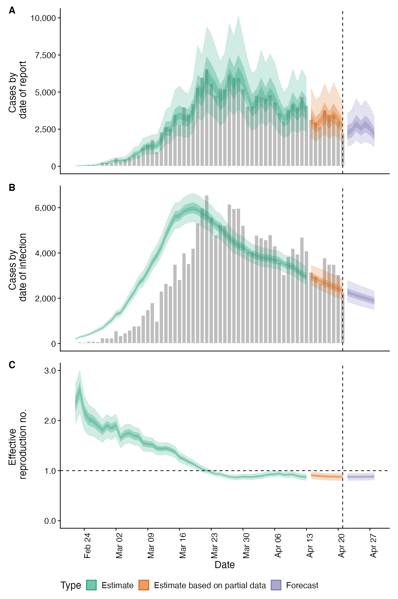
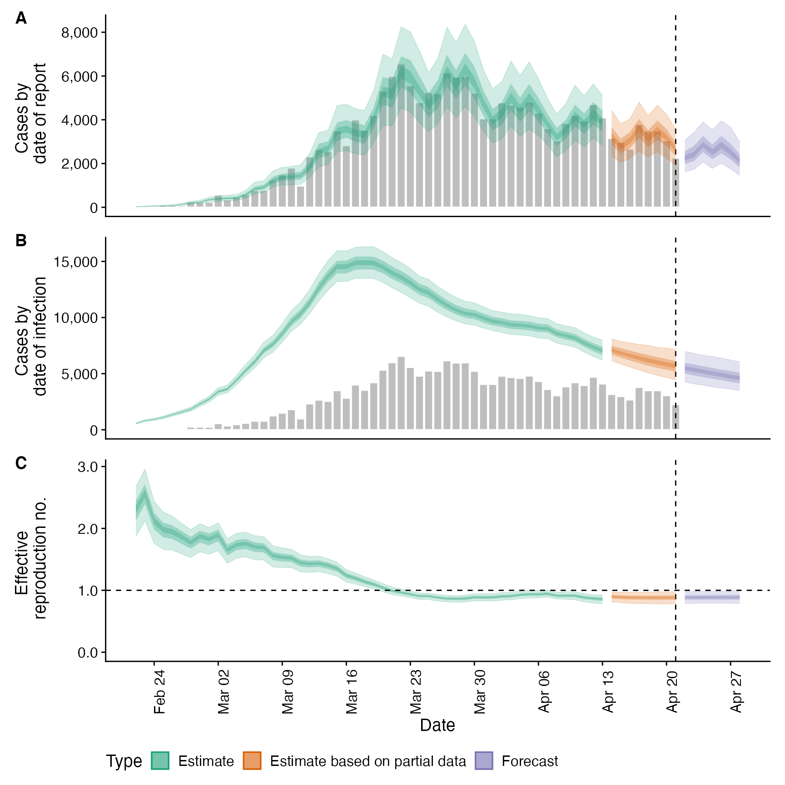
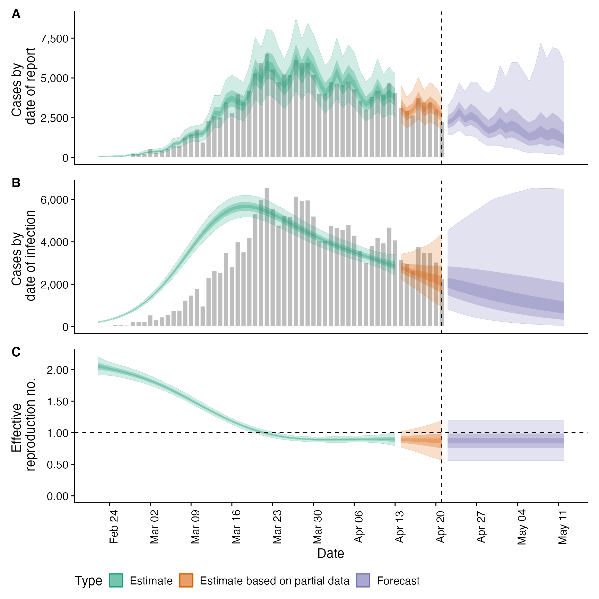
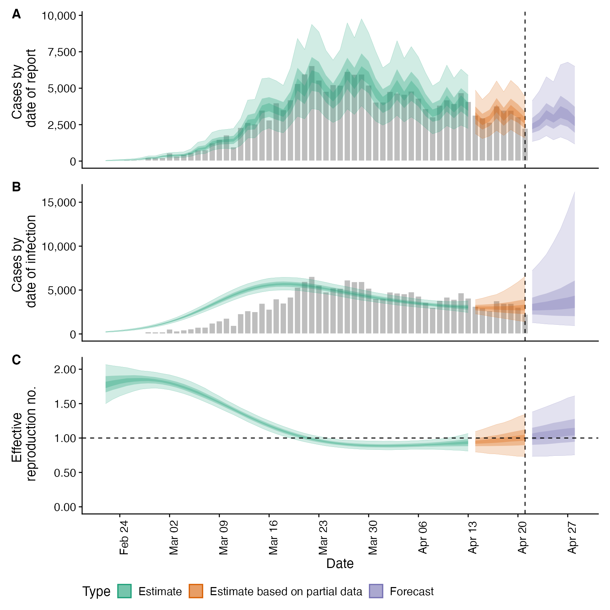
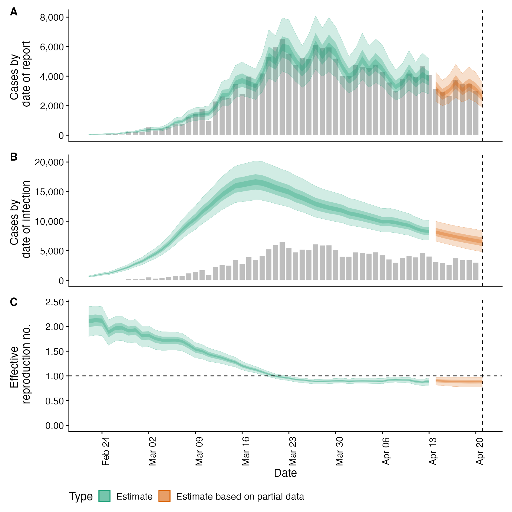
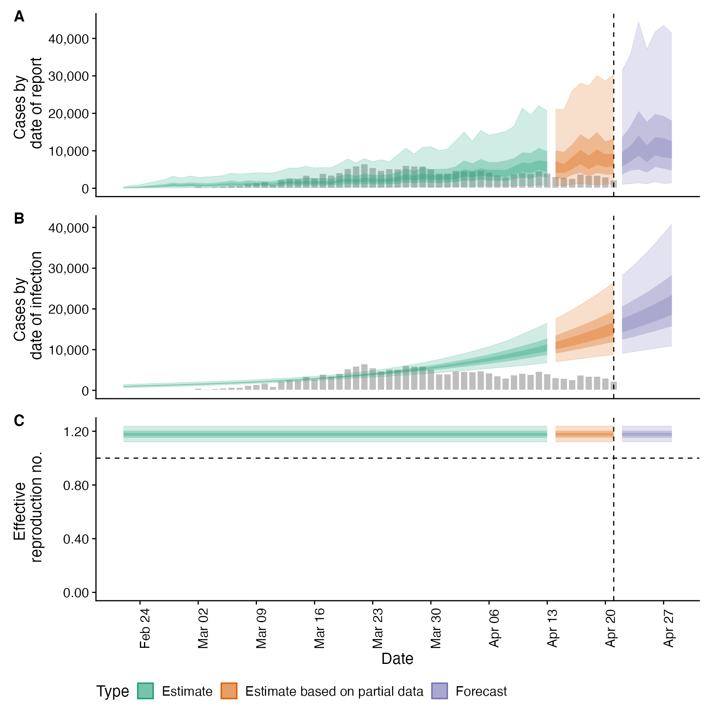
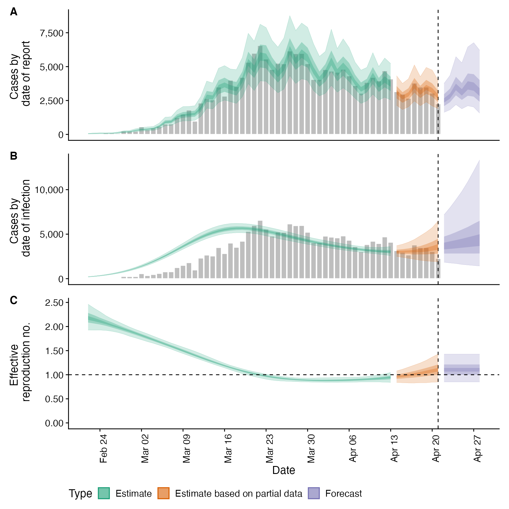
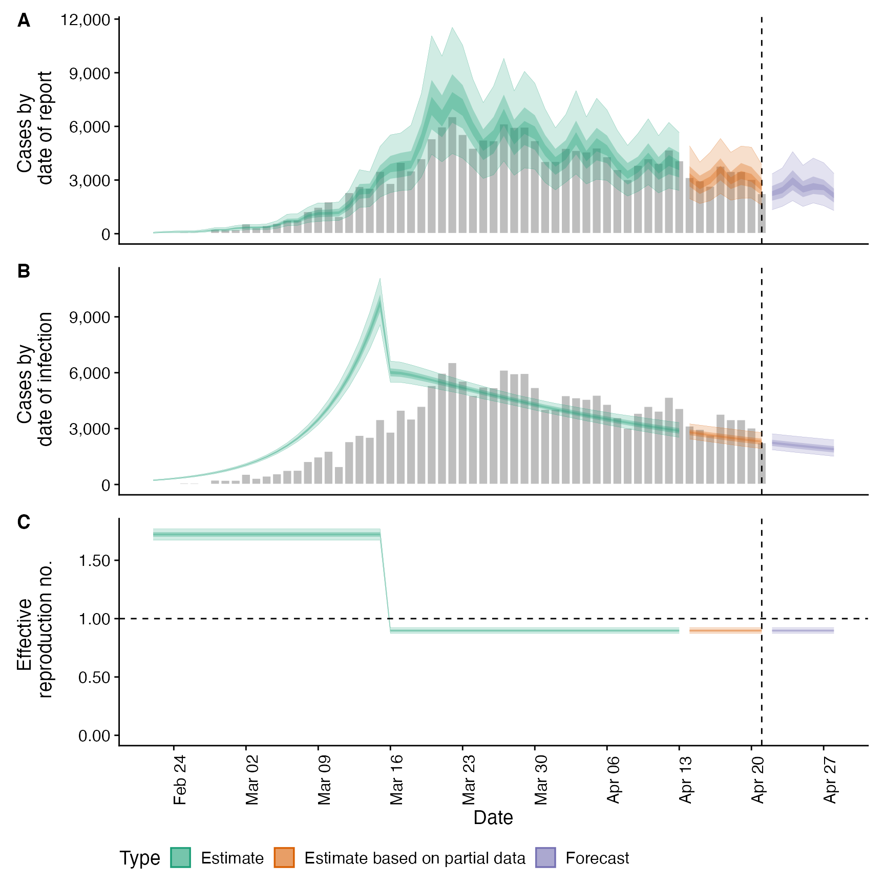
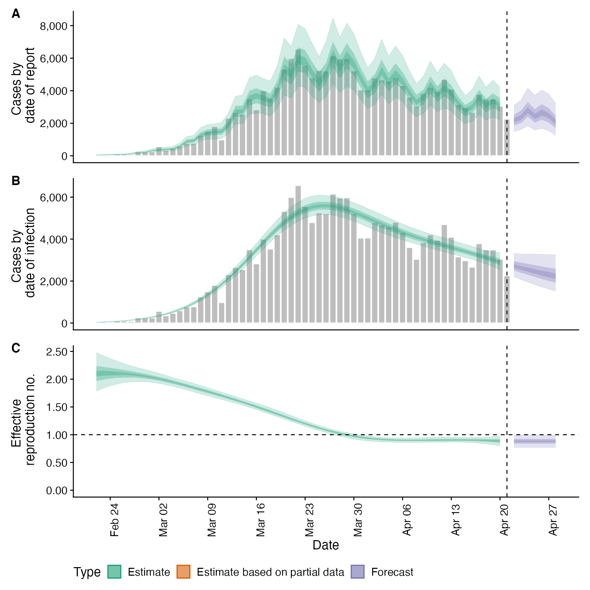

estimate_infections.RdThis function uses a non-parametric approach to reconstruct cases by date of infection from reported
cases. It uses either a generative Rt model or non-parametric back calculation to estimate underlying
latent infections and then maps these infections to observed cases via uncertain reporting delays and a flexible
observation model. See the examples and function arguments for the details of all options. The default settings
may not be sufficient for your use case so the number of warmup samples (stan_args = list(warmup)) may need to
be increased as may the overall number of samples. Follow the links provided by any warnings messages to diagnose
issues with the MCMC fit.
estimate_infections( reported_cases, generation_time, delays = list(), rt = list(), gp = list(), obs_model = list(), stan_args = list(), backcalc = list(), horizon = 7, samples = 1000, CrIs = c(0.2, 0.5, 0.9), future = FALSE, max_execution_time = Inf, return_fit = TRUE, id = "estimate_infections", verbose = interactive() )
| reported_cases | A data frame of confirmed cases (confirm) by date (date). confirm must be integer and date must be in date format. |
|---|---|
| generation_time | A list containing the mean, standard deviation of the mean (mean_sd), standard deviation (sd), standard deviation of the standard deviation and the maximum allowed value for the generation time (assuming a gamma distribution). |
| delays | A list of delays (i.e incubation period/reporting delay) between infection and report.
Each list entry must also be a list containing the mean, standard deviation of the mean (mean_sd),
standard deviation (sd), standard deviation of the standard deviation and the maximum allowed value for the
that delay (assuming a lognormal distribution with all parameters excepting the max allowed value
on the log scale). To use no delays set this to |
| gp | A list of settings to override the package default Gaussian
process settings. See the documentation for |
| obs_model | A list of settings to override the package default observation
model settings. See the documentation for |
| stan_args | A list of settings to override the package default stan settings. See the documentation
for |
| backcalc | A list of settings to override the back calculation settings. See
|
| horizon | Numeric, defaults to 7. Number of days into the future to forecast. |
| samples | Numeric, defaults to 1000. Number of samples post warmup. |
| CrIs | Numeric vector of credible intervals to calculate. |
| future | Logical, defaults to |
| max_execution_time | Numeric, defaults to Inf (seconds). If set will kill off processing of each chain if not finished within the specified timeout. When more than 2 chains finish successfully estimates will still be returned. If less than 2 chains return within the allowed time then estimation will fail with an informative error. |
| return_fit | Logical, defaults to TRUE. Should the fitted stan model be returned. |
| id | A character string used to assign logging information on error. Used by |
| verbose | Logical, defaults to |
# \donttest{ # get example case counts reported_cases <- EpiNow2::example_confirmed[1:60] # set up example generation time generation_time <- get_generation_time(disease = "SARS-CoV-2", source = "ganyani") # set delays between infection and case report incubation_period <- get_incubation_period(disease = "SARS-CoV-2", source = "lauer") reporting_delay <- list(mean = convert_to_logmean(3, 1), mean_sd = 0.1, sd = convert_to_logsd(3, 1), sd_sd = 0.1, max = 15) # default setting def <- estimate_infections(reported_cases, generation_time = generation_time, delays = list(incubation_period, reporting_delay), rt = list(prior = list(mean = 2, sd = 0.2)), stan_args = list(cores = ifelse(interactive(), 4, 1))) # real time estimates summary(def)#> measure estimate #> 1: New confirmed cases by infection date 1929 (837 -- 3920) #> 2: Expected change in daily cases Unsure #> 3: Effective reproduction no. 0.8 (0.5 -- 1.1) #> 4: Rate of growth -0.05 (-0.14 -- 0.04) #> 5: Doubling/halving time (days) -14 (17.2 -- -5)# using back calculation (combined here with under reporting) backcalc <- estimate_infections(reported_cases, generation_time = generation_time, delays = list(incubation_period, reporting_delay), rt = NULL, obs_model = list(scale = list(mean = 0.4, sd = 0.05)), stan_args = list(cores = ifelse(interactive(), 4, 1))) plot(backcalc)# Rt projected into the future using the Gaussian process project_rt <- estimate_infections(reported_cases, generation_time = generation_time, delays = list(incubation_period, reporting_delay), rt = list(prior = list(mean = 2, sd = 0.2), future = "project"), stan_args = list(cores = ifelse(interactive(), 4, 1))) plot(project_rt)# default settings on a later snapshot of data snapshot_cases <- EpiNow2::example_confirmed[80:130] snapshot <- estimate_infections(snapshot_cases, generation_time = generation_time, delays = list(incubation_period, reporting_delay), rt = list(prior = list(mean = 1, sd = 0.2)), stan_args = list(cores = ifelse(interactive(), 4, 1))) plot(snapshot)# stationary Rt assumption (likely to provide biased real-time estimates) stat <- estimate_infections(reported_cases, generation_time = generation_time, delays = list(incubation_period, reporting_delay), gp = list(stationary = TRUE), rt = list(prior = list(mean = 2, sd = 0.2)), stan_args = list(cores = ifelse(interactive(), 4, 1))) plot(stat)# no gaussian process (i.e fixed Rt assuming no breakpoints) fixed <- estimate_infections(reported_cases, generation_time = generation_time, delays = list(incubation_period, reporting_delay), gp = NULL, stan_args = list(cores = ifelse(interactive(), 4, 1))) plot(fixed)# no delays no_delay <- estimate_infections(reported_cases, generation_time = generation_time, stan_args = list(cores = ifelse(interactive(), 4, 1))) plot(no_delay)# break point but otherwise static Rt bp_cases <- data.table::copy(reported_cases) bp_cases <- bp_cases[, breakpoint := ifelse(date == as.Date("2020-03-16"), 1, 0)] bkp <- estimate_infections(bp_cases, generation_time = generation_time, delays = list(incubation_period, reporting_delay), rt = list(prior = list(mean = 2, sd = 0.2)), stan_args = list(cores = ifelse(interactive(), 4, 1)), gp = NULL) # break point effect summary(bkp, type = "parameters", params = "breakpoints")#> date variable strat type median mean sd lower_90 #> 1: <NA> breakpoints 1 <NA> -0.632155 -0.6320511 0.02912639 -0.6777271 #> lower_50 lower_20 upper_20 upper_50 upper_90 #> 1: -0.6542384 -0.6407839 -0.6242054 -0.6114191 -0.5835084# weekly random walk rw <- estimate_infections(reported_cases, generation_time = generation_time, delays = list(incubation_period, reporting_delay), rt = list(prior = list(mean = 2, sd = 0.2), rw = 7), stan_args = list(cores = ifelse(interactive(), 4, 1)), gp = NULL) # random walk effects summary(rw, type = "parameters", params = "breakpoints")#> date variable strat type median mean sd lower_90 #> 1: <NA> breakpoints 1 <NA> -0.172193695 -0.17496222 0.08650410 -0.3219475 #> 2: <NA> breakpoints 2 <NA> -0.140505226 -0.14077143 0.08256755 -0.2726374 #> 3: <NA> breakpoints 3 <NA> -0.241135336 -0.24128851 0.08492014 -0.3810639 #> 4: <NA> breakpoints 4 <NA> -0.270205223 -0.26785581 0.09695705 -0.4246153 #> 5: <NA> breakpoints 5 <NA> -0.032994528 -0.03145758 0.09529011 -0.1918580 #> 6: <NA> breakpoints 6 <NA> 0.036374502 0.03719977 0.09470751 -0.1081312 #> 7: <NA> breakpoints 7 <NA> -0.068938962 -0.07391686 0.11852490 -0.2727513 #> 8: <NA> breakpoints 8 <NA> -0.006299332 -0.00919967 0.18368991 -0.3073298 #> lower_50 lower_20 upper_20 upper_50 upper_90 #> 1: -0.23177740 -0.193278221 -0.150101659 -0.115027190 -0.041838492 #> 2: -0.19838068 -0.162297457 -0.119865300 -0.085990459 -0.001909209 #> 3: -0.29706098 -0.260922302 -0.220553267 -0.185179602 -0.101344600 #> 4: -0.33329528 -0.293220044 -0.243317520 -0.204472361 -0.098042882 #> 5: -0.09661587 -0.053321318 -0.008759404 0.029974346 0.126895012 #> 6: -0.02940336 0.009107231 0.058913601 0.101171854 0.190517221 #> 7: -0.15354943 -0.101269762 -0.037677260 0.006861449 0.107305202 #> 8: -0.13063244 -0.051184964 0.036032717 0.106241840 0.300615207# }